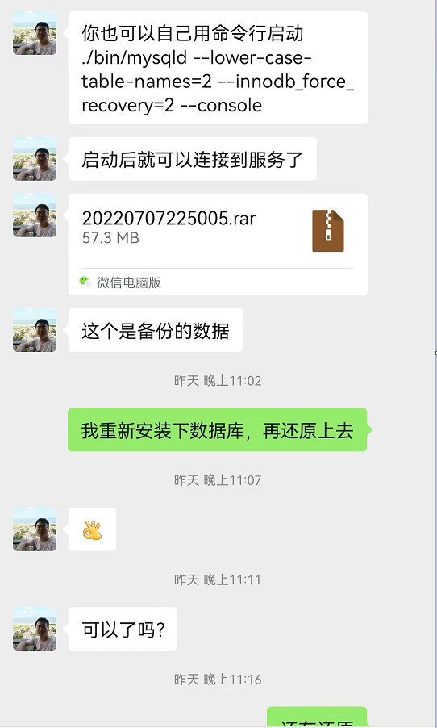

目录
- 事故过程
- 恢复过程
- 总结经验(教训)
事故过程
昨天下午3点，同事打我电话说项目上的MySql数据库启动不了了。
事后才知道是因为客户机房昨天临时断电，
然后我们服务器的UPS不知道为什么在断电后没有启动应急供电。
导致了服务器非正常关机，之后直接导致MySql服务启动失败。
听到MySql服务启动失败就感觉有大事要发生。因为这个项目才上线不久。
就出现了系统启动不了，停止使用的线上故障。
幸好的事，因为我们是内部系统，在当时客户的使用高峰期已经过去。
主要业务已经处理完成。在这个时间内没有实时在线使用终端。
我们可以放心处理问题。
当我远程连接上客户的服务器的时候，发现MySql数据服务没有启动。
当我手工重新启动后，会在内秒钟内再次停止。
跑到事件查看器里看到下图所未的错误
然后我找到MySql的错误日志文件，发现如下错误信息
2022-07-08T01:54:13.495374Z 0 [ERROR] [MY-013183] [InnoDB] Assertion failure: dict0dict.cc:3378:for_table || ref_table thread 4280
恢复过程
binlog （此路不通）
到了这里，我就已经知道这个MySql服务已经不可能正常启动了。
但是又有一个新的问题来了。这个数据库没有做定时备份
没有一个可以还原的备份文件。
那么要使用MySql的备份全量还原+binlog增量恢复的路就行不通了。
第一种方式行不通了。我就想是不是可以通过binlog全量恢复
然后我去看数据目录下的binlog日志文件
发现binlog日志最早也只有6月8号的日志，更早的日志已经找不到了。
所以binlog全量恢复的路也走不通了。
到此为止，发现通过备份还原和日志还原的路已经不行了。
只能在物料数据文件上找突破了。
因为我们MySql的数据目录物理文件还是全都在。
所以我马上把MySql数据目录全都打成了一个压缩包备份了出来。
迁移数据物理文件（失败）
我的想法是可不可以在自己的电脑上，安装同样版本的MySql服务
然后把数据物理文件迁移，到新的MySql服务上，可以把数据重新加载出来
我先是在新的机器上重新安装了同样版本的MySql数据库
然后把对应的数据目录与对应的ib文件迁移到新的数据库服务下面
然后重启MySql服务，我再用命令行进入到mysql里，还是没有发现我迁移的数据库
到此，迁移数据物理文件还原的方式已经失败
重建数据库，重新新加载表空间 （失败）
其实从我们备份的物理文件可以看到，在我们的对应要还原的数据库目录下面
每个表都是有对应的ibd物理文件，与我对应的数据库表是一一对应的
所以我们可以重建数据库与数据表，还后把对应数据表的文件替换为备份的表文件
再通过重建表空间来还原数据
因为我用的是EFCore Code First模式，所以重建数据库还是很简单的
通过用EFCore的Script-Migration -From 0就可以把所有数据库的迁移脚本全都生成
然后在新构建的数据里执行脚本，所有的数据表就都重新构建完了
重构完数据库与表后，我们就可以在MySql的数据目录下看到所有数据表的ibd文件
只是这些ibd文件都是新的，没有数据的空表
然后我们就可以通过用
ALTER TABLE tablename DISCARD TABLESPACE;
来分离表空间，每个表执行一次，分享后，在MySql的数据目录下对应表的ibd文件就是清除
SELECT CONCAT(‘ALTER TABLE ‘,TABLE_NAME,’ DISCARD TABLESPACE;’) AS DiscardSQL FROM information_schema.TABLES WHERE TABLE_SCHEMA=’22CTSX006’
用上面的脚本可以把所有表的对应分离表空间语句一次生成，
然后我们在数据库里执行分离表空间
然后我们把正式服务器备份下来的ibd文件复制到对应数据库目录下面
接下来我们就要用IMPORT TABLESPACE重新导入表空间
ALTER TABLE tablename IMPORT TABLESPACE;
然后我们在执行表空间重新导入的时候，一部分表导入成功
但是又遇到了有几个关键的表导入失败
然后就发现MySql数据库服务已经停止运行。
然后看到MySql里的错误日志出现这样的日志
2022-07-08T03:46:12.679493Z 12 [ERROR] [MY-013183] [InnoDB] Assertion failure: dict0stats.cc:868:btr_page_get_level(page, mtr) == level thread 13516
把MySql重启了几次，然后重新导入表空间，还是一样，
所以到这里，重新导入表空间的路也遇到了死胡同。
使用innodb_force_recovery修复数据库 (成功)
对于innodb_force_recovery的理解是
当MySQL服务异常重启失败后，可以通过配置参数innodb_force_recovery来对MySQL服务进行修复启动。
参数innodb_force_recovery选项：
- (SRV_FORCE_IGNORE_CORRUPT): 忽略检查到的 corrupt 页。尽管检测到了损坏的 page 仍强制服务运行。一般设置为该值即可，然后 dump 出库表进行重建。
- (SRV_FORCE_NO_BACKGROUND): 阻止主线程的运行，如主线程需要执行 full purge 操作，会导致 crash。 阻止 master thread 和任何 purge thread 运行。若 crash 发生在 purge 环节则使用该值。
- (SRV_FORCE_NO_TRX_UNDO): 不执行事务回滚操作。
- (SRV_FORCE_NO_IBUF_MERGE): 不执行插入缓冲的合并操作。如果可能导致崩溃则不要做这些操作。不要进行统计操作。该值可能永久损坏数据文件。若使用了该值，则将来要删除和重建辅助索引。
- (SRV_FORCE_NO_UNDO_LOG_SCAN): 不查看重做日志，InnoDB 存储引擎会将未提交的事务视为已提交。此时 InnoDB 甚至把未完成的事务按照提交处理。该值可能永久性的损坏数据文件。
- (SRV_FORCE_NO_LOG_REDO): 不执行前滚的操作。恢复时不做 redo log roll-forward。使数据库页处于废止状态，继而可能引起 B 树或者其他数据库结构更多的损坏。
所以我们在my.ini配置文件里加上
innodb_force_recovery=2
然后重启数据库服务器，这个时候数据库就可以正常启动
这个时候，我们就可以通过Navicat工具连接上MySql数据库进行备份
如上图，我们把数据库已经备份完成了。接下来处理就简单了。
当然我们也可以通过命令行mysqldump工具进行备份
mysqldump -u root -p 22CTSX006 > 22CTSX006.sql #备份22CTSX006到22CTSX006.sql文件
只用把线上的MySql服务重新安装，然后把备份文件恢复
这样线上的MySql服务就正常运行了。
此处要感谢我们峰哥的江湖救急，晚上11点多了还在陪我一起恢复数据

总结经验(教训)
总结原因
- 没有定时自动备份数据机制
- UPS没有正常启动应急供电
经验教训
- 定时备份数据
- 定时备份数据
- 定时备份数据
重要的事情要说3遍
虽然平常看起来备份数据没有什么作用，
但是到了关键时刻，那是无价之宝